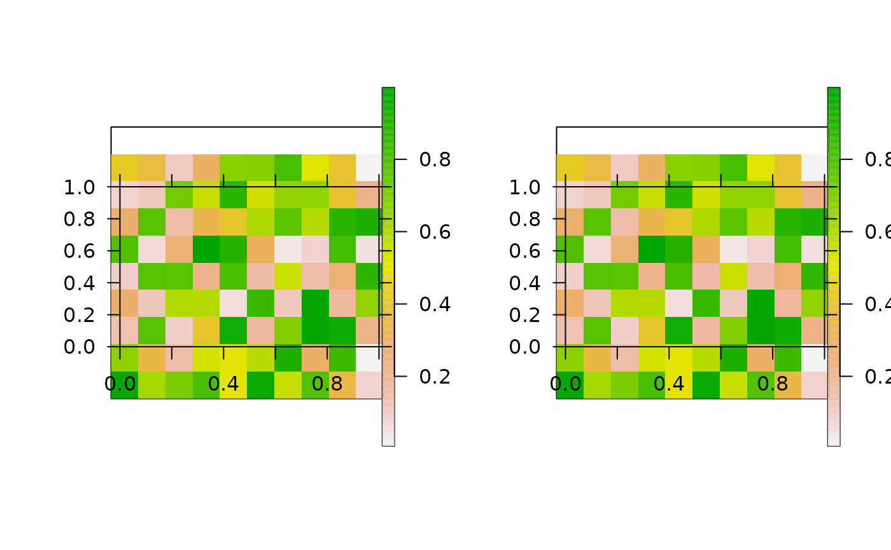

This function creates pretty raster maps from a list of source files. For each file, the function reads the raster into R (via read), processes the raster (via process, if specified) and produces or saves a plot (via pretty_map and associated arguments). The function can be implemented in parallel via cl and varlist.
pretty_map_from_file_raster( x, read = raster::raster, add_rasters = list(), process = NULL, png_param = NULL, cl = NULL, varlist = NULL, ... )
| x | A list of full file paths to |
|---|---|
| read | A function to read files. The default is |
| add_rasters | A named list, passed to |
| process | (optional) A function to process |
| png_param | (optional) A named list of arguments, passed to |
| cl, varlist | Parallelisation arguments. |
| ... | Additional arguments passed to |
The function returns or saves a plot for each file.
This is a wrapper for pretty_map.
Edward Lavender
#### Generate and save some example raster files r1 <- raster::raster(matrix(runif(100, 0, 1), ncol = 10, nrow = 10)) r2 <- raster::raster(matrix(runif(100, 10, 20), ncol = 10, nrow = 10)) root <- paste0(tempdir(), "/egs/") dir.create(root) raster::writeRaster(r1, paste0(root, "r1.tif")) #> Warning: NOT UPDATED FOR PROJ >= 6 raster::writeRaster(r1, paste0(root, "r2.tif")) #> Warning: NOT UPDATED FOR PROJ >= 6 #### List source files for plotting files <- list.files(root, full.names = TRUE) #### Example (1): Implement function with default options pp <- graphics::par(mfrow = c(1, 2)) pretty_map_from_file_raster(files) #> prettyGraphics::pretty_map() CRS taken as: 'NA'. #> prettyGraphics::pretty_map() CRS taken as: 'NA'. par(pp) #### Example (2): Customise the rasters/plot via add_rasters and ... pp <- graphics::par(mfrow = c(1, 2)) pretty_map_from_file_raster(files, add_rasters = list(col = grDevices::topo.colors(100)), xlab = "x", ylab = "y") #> prettyGraphics::pretty_map() CRS taken as: 'NA'. #> prettyGraphics::pretty_map() CRS taken as: 'NA'. graphics::par(pp) #### Example (3): Process rasters using the process argument # E.g. to mask areas of the rasters pp <- graphics::par(mfrow = c(1, 2)) mk <- r1 mk[1, ] <- NA pretty_map_from_file_raster(files, process = function(x) raster::mask(x, mask = mk)) #> prettyGraphics::pretty_map() CRS taken as: 'NA'. #> prettyGraphics::pretty_map() CRS taken as: 'NA'.  graphics::par(pp) #### Example (4): Save plots to file via png_param pp <- graphics::par(mfrow = c(1, 2)) pretty_map_from_file_raster(files, png_param = list(filename = root)) #> prettyGraphics::pretty_map() CRS taken as: 'NA'. #> prettyGraphics::pretty_map() CRS taken as: 'NA'. graphics::par(pp) list.files(root, "*.png") #> [1] "1.png" "2.png" #### Example (5): Read, plot and save files in parallel via cl and varlist if (FALSE) { pretty_map_from_file_raster(files, png_param = list(filename = root), cl = parallel::makeCluster(2L), varlist = "files") }